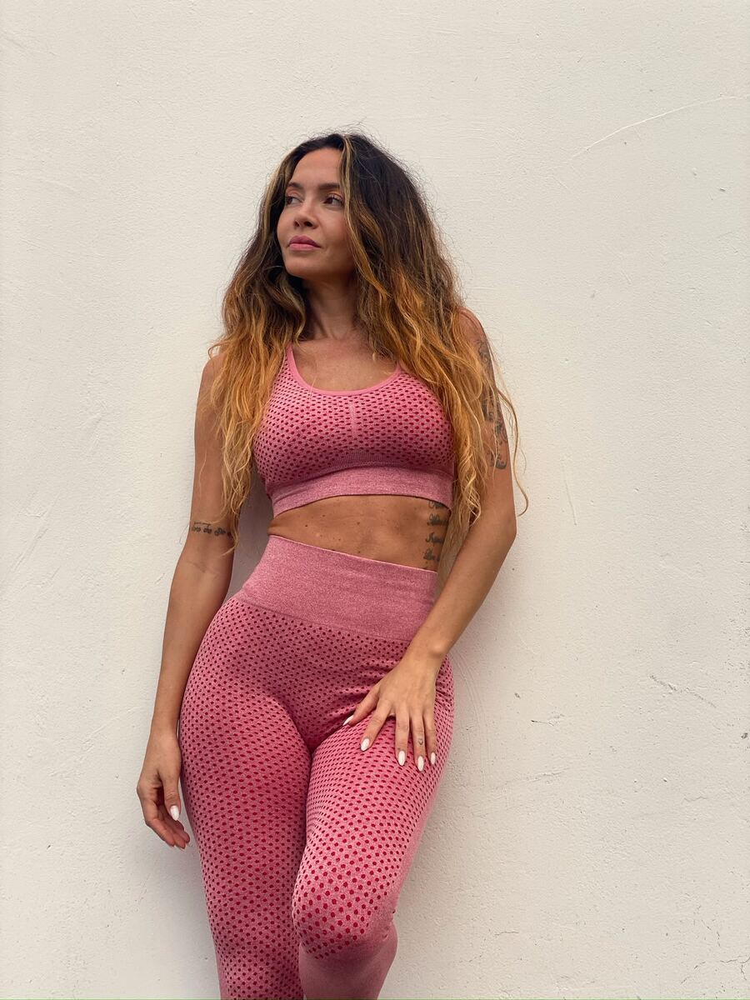
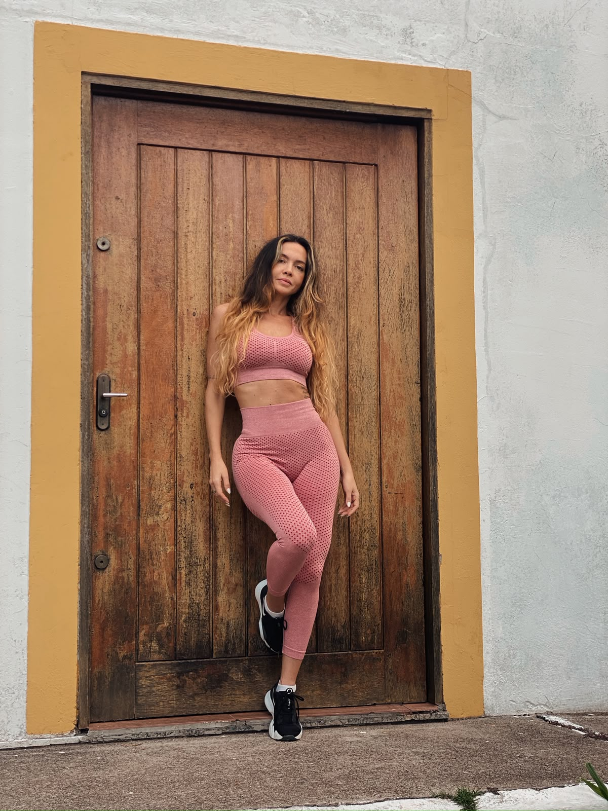
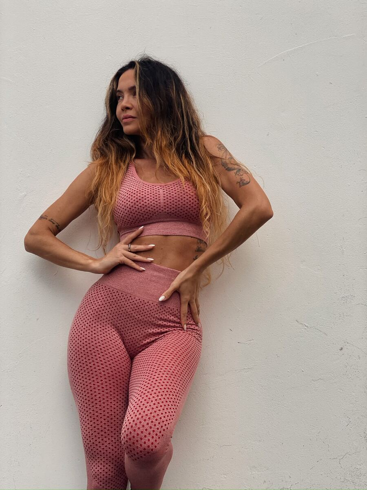

Desafio de 14 dias · De Volta Pra Mim
Volte a cuidar de você com 15 minutos por dia.
Treinos curtos em casa, com o peso do próprio corpo, para sair do ciclo de começar, parar e se culpar.
R$ 47 · 14 dias · acesso por 30 dias
Lidia Vicente · mãe de 3
Se você está aqui
Talvez você conheça esse ciclo.
- O dia é dos filhos, da casa e do trabalho. Para você, sobra o que sobra.
- Você paga a academia, não consegue ir e ainda se sente culpada.
- Começa com tudo, para na segunda semana e promete recomeçar na segunda-feira.
- O problema nem sempre é falta de vontade. É tentar encaixar na vida um treino que não cabe na sua rotina.
A descoberta
Seu dia tem 1.440 minutos. 15 são seus.
Não é preciso fazer muito de vez em quando. É fazer pouco, todos os dias.
O resultado mora na constância. Não no excesso.
Minha história
Sou a Lidia, mãe de três. E já estive exatamente aí.
Na terceira gestação, engordei 22 kg. Sem tempo e sem energia para academia, eu precisava de algo que coubesse na minha vida real.
Encontrei nos treinos curtos em casa um jeito de recuperar meu corpo e continuar evoluindo. Pouco tempo, todos os dias. Foi assim que o Meu Ritú nasceu.

Me ouça contando como tudo começouvídeo da Lidia entra aqui

O desafio
14 dias para criar a sua constância.
Cerca de 15 minutos por dia, em casa, com o peso do próprio corpo. Sem academia.
Semana 1 7 treinos, um por dia
- 1
- 2
- 3
- 4
- 5
- 6
- 7
Semana 2 os mesmos 7 treinos, de novo
- 1
- 2
- 3
- 4
- 5
- 6
- 7
Repetir é de propósito: é assim que o treino vira hábito.
-
Treinos
7 treinos de cerca de 15 minutos
Você dá o play e faz junto, na sala ou no quarto.
-
Incluso
Meu Ritú Tracker
Material para acompanhar seus hábitos ao longo dos 14 dias.
-
Bônus
Minicurso O Poder da Postura
Quatro aulas para cuidar da sua postura no dia a dia.
Desafio
De Volta Pra Mim
O que você recebe
- 14 dias de desafio com 7 treinos de cerca de 15 minutos
- Meu Ritú Tracker, para acompanhar seus hábitos
- Bônus: minicurso O Poder da Postura (4 aulas)
- Acesso ao conteúdo por 30 dias
Pagamento seguro pela Kiwify · Acesso enviado para o seu e-mail
Garantia de 7 dias. Se não for para você, pode pedir o reembolso. [confirmar prazo na Kiwify]
Dúvidas
Antes de você começar.
Estou parada há muito tempo. Consigo?
Sim. Os treinos são curtos e usam o peso do próprio corpo. Você faz no seu ritmo.
Preciso de algum equipamento?
Não. Você treina em casa, só com o peso do próprio corpo.
Quanto tempo por dia?
Cerca de 15 minutos.
E se eu perder um dia?
Tudo bem. O acesso fica liberado por 30 dias, então dá para retomar no dia seguinte.
Tive bebê há pouco tempo. Posso fazer?
Converse com seu médico antes e comece quando tiver liberação.
Como recebo o acesso?
Depois da compra, a Kiwify envia o acesso para o seu e-mail.
Seu primeiro passo
Decisão vale mais que motivação.
Quero voltar pra mimR$ 47 · 14 dias · acesso por 30 dias